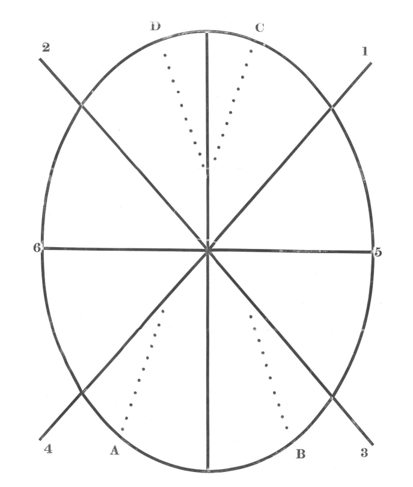

I've always had a fascination with electrical things and components as well, trying to understand how computers or electronics work as a much deeper level then most people ever look into in the first place.
Each small-ish project has taught me so much in those areas. Figuring out how to properly work on the car and its various fuses and measuring things like parasitic draws. With the 3DS, trying to work with stupidly delicate ribbon cables and how to be to patient when it came to plugging those back in. For if I messed that up, the board was cooked. I'd like to get into Micro Soldering myself, but I need a lot better equipment for that then I currently posses.
I've always enjoyed doing various activities outside.
I was a part of a cub scouts troop for around 5 or so years.
Doing a lot of outdoor activities, nature walks, park/highway cleanups, camping trips
and so on. And in winter we go snow shoeing, skiing and building Quinzhees (think
an Igloo made of piling snow and hollowing it out).
Afterwards in High School years I took a
“Outdoor Pursuits” class, wherein we would spend a lot of time learning about different
aspects of wilderness. That involved learning different tools or procedures
used during camping, how to cook on small propane camp stoves, tying a large
variety of knots and more. Participating in multi day camping trips and canoeing trips.
in 2024 I joined a local LARP group, Forgotten Empires. Now, if you asked
a nerd if they thought the idea of roughing it in the woods, getting about 30k steps a day,
sprinting and exercising in 30-40C heat, eating quite frankly not enough and always being
parched, sounded like fun. They'd likely call you insane. However. Make it like
living DND, that happens in real time. And you may get a different answer.
That was the case for me. I never thought LARP would be something that interested
me. The idea that I had in my head, was that it was fairly boring. Just a group of
people in customs who acted ridiculous for a weekend or X period of time. And, while
some of that is true, we can be ridiculous, it is nowhere near boring. So, so far from it.
The world of Forgotten Empires is quite frankly insane. Detailed lore, magic system,
pantheon of Deities, and so so much more. It really is like a very complex DND world,
but we live it. Instead of rolling dice to attack, we are actively swinging various
foam weapons at one another. Swords, Axes, Spears, Knives, Great-swords and bows.
There is a vast and complicated skill, and magic system. All doing various effects
and 'casting time' and verbal calls. For example as spells gain levels, there are fewer
spell slots, similar to DND. However, unlike DND, this LARP group has incantations that
must be recited before throwing a 'packet'. Which is bird seed tied in a piece of cloth.
As spell levels get higher, they must have more syllables. One of my fellow LARPer's has
a 9th level spell, and before throwing the spell at someone, they must recite
"Become struck with the power of the sun" then says 9 divine, the effect of the spell.
Dealing 9 divine damage.
Which doesn't seem bad. But put yourself in a 20 vs 20 person battle, with formations and
a front-line and back-line with shouting and yelling and threats all around, it becomes very
overwhelming at first. You get used to it, and learn and adapt, but it is truly a lot all
at once.
It is absolutely an unforgettable experience.
If you liked being in the woods as a child, and grabbing sticks
and pretending to fight off various monsters or your friends. HEMA is like
that. But on steroids. Being actually trained in blade combat is something that
every adventurous kid dreams of. And even in the small city I've grown up in,
there is a gym for it.
The system of one hand sword fighting that I was
instructed with was Roworth's Art of Defense. Which was a fighting
style that was designed to rapidly teach new soldiers how to fight
with, really any, single hand object or weapon. Roworth Published this book
in 1798 for the British Military to use. There were 7 basic cuts that get taught.
This is what it looks like in practice

Just add a 7 at the top of the vertical line. And that is the 7 cuts.
Of course, there are many different defensive actions you take to parry, block,
and much more. But if you would like to learn about that, there is a section
on Wikipedia
down near the bottom that has links to a place where you can view various editions of
this book. I am also learning German Longsword. That, is so much more complicated
then Roworths is. Afterall, you are using two hands on one sword. It gets complicated fast.
Suffice to say, HEMA is incredible exercise, and a WILD experience.
And yes! If you were curious, HEMA has given me a very significant skill
advantage over the majority of LARPers at my group, given most have no real
weapons training.
For the most part, I think it goes without saying. No duh, a game developer, liking
video games? It's unheard of! Truly a new frontier.
However, sarcasm aside. It IS something I quite enjoy doing. While I was
a student with Toronto Film School however, gaming took a very heavy back burner. I
was so busy with the copious amounts of class work that was being given out that I
never really had time to actually enjoy playing themself. But, now that I have graduated
I have lots of time to explore gaming again. And wow, is it quite the breath of fresh air.